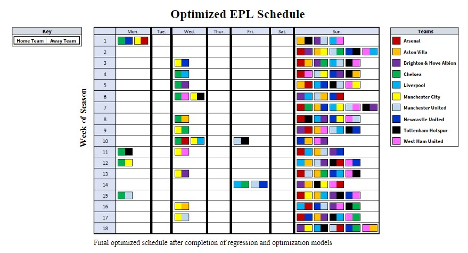

created with gyalpo dongo & vanessa vidic.
The English Premier League (EPL) is a 20-team football league located in England that is considered to be one of the top professional football leagues in the world. Before the start of each season, the EPL must schedule 380 games amongst 20 teams to take place over the span of 38 rounds, subject to numerous and varying team and matchup constraints. Our goal for this project is to optimize the schedule such that we maximize attendance whilst minimizing the fatigue caused by teams traveling between games.
Recent years have seen a significant rise in the number of games that football teams and players are required to play. News reports from CNN, The Athletic, The Guardian, and other reputable sports sites describe the EPL match schedule as “exhausting” and “relentless” with tangible impacts on players’ physical and mental health, coming forward with quotes from players expressing their frustration.
By approaching football scheduling from the perspective of minimizing travel distance, we hope to at least reduce this burden, helping players become more satisfied with the schedule of games they are required to play. However, we recognize that team ownerships and the EPL itself are primarily concerned with a revenue perspective; thus, it is also useful to build a model that maximizes attendance, a good numerical proxy for ticket sales and thus club revenue. Therefore, by tackling the problem of scheduling two-dimensionally, we hope to find the most optimal schedule for EPL teams.
In order to achieve our goal, we split our model into three high-level parts. These parts address the need to 1) model future expected game attendances, since these cannot be known before any given season starts, and 2) use forecasted attendance data alongside stadium distance data to optimize the schedule. The three parts can be briefly described as follows:
To assess the quality of our models, our project optimizes the Premier League schedule for the 2022-23 season. Additionally, due to restrictions from the Part 2 model and our computational power, we were required to limit our project to a set of 10 Premier League teams (i.e., we scheduled a 10-team subset of the league to play over a 18-round, 126-day season). Nevertheless, the models constructed are all still applicable to a full 20-team league. The details of each model part are spared from here.
For reference, the ten teams included in the scheduling are: Arsenal, Aston Villa, Brighton & Hove Albion, Chelsea, Liverpool, Manchester City, Manchester United, Newcastle United, Tottenham Hotspur, West Ham United.
The optimized 2022-2023 EPL schedule generated by the model can be found below:
The schedule clearly indicates that five games (and thus all ten teams) play during each round (week), and upon inspection can be found to satisfy all desired constraints. Additionally, the majority (sixty-nine out of the ninety games scheduled) are scheduled to take place on the final day of the week.
For teams such as Chelsea and Manchester City, who have a much higher proportion of home games scheduled earlier in the week, the results are consistent with the observation that their predicted attendance trends slightly downward (by around two attendees fewer per day for both teams) as the season progresses.
The optimized 2022-2023 schedule for the selected ten teams was generated using available data up until the 2021-2022 season, leaving the true 2022-2023 season attendance data and traveling distance of each team relative to one another for use in benchmarking analysis.
The total optimal round-over-round distance traveled for the chosen ten teams using our Part 2 model in conjunction with Part 1 linear regression was calculated at 1.306e7 km2. This is less than the true distance that these same ten teams traveled consecutively amongst each other in the 2022-2023 season, at 1.550e7 km2, by approximately 15%. Therefore, our Part 2 optimization model successfully finds a feasible set of weekly match schedules, allowing for an overall lower total number of kilometers traveled round-over-round for all ten teams as compared to the benchmark.
The optimal total attendance numbers for all games scheduled throughout the 2022-2023 season as based on our Part 3 model was 4.214e6 attendees. The true total attendance throughout the 2022-2023 season amongst the ten teams in question was 4.657e6 attendees. Although our model did not improve on the EPL’s real attendance numbers, our model’s result is within 10% of the official attendance numbers. Additionally, it is important to note that maximizing attendance occurs in Part 3 of our model, only after we have already optimized over distance. Therefore, as total distance traveled is prioritized as the primary funnel for scheduling games in Part 2, it is natural that attendance may be slightly lower in the final model’s result.
Thus, our three-part optimization approach demonstrates that it is highly feasible to take into account two perspectives that may at first appear conflicting, between ownerships’ desires for more games and higher ticket sales and players’ needs to rest and recover. Additionally, our model suggests that there is a possibility to reduce the strain on players created by rapid travel/game turnaround times without significantly impacting attendance numbers.